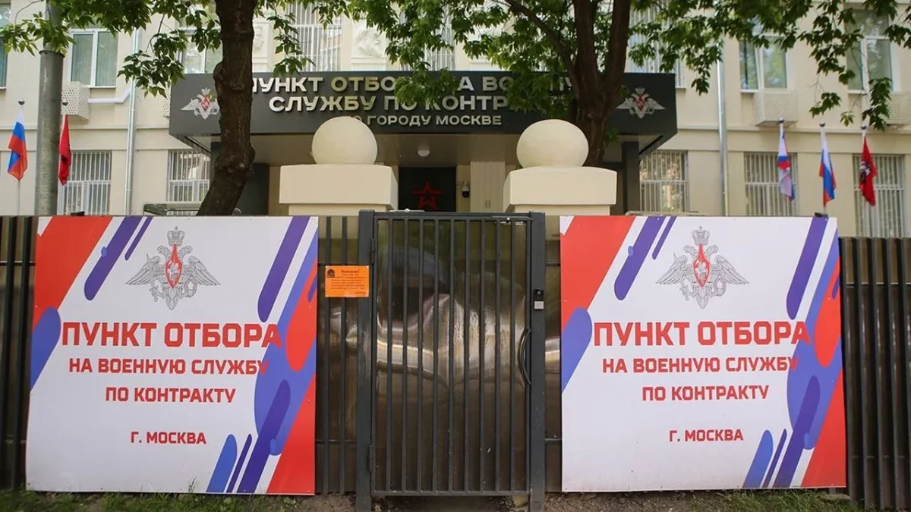

Контракт в Африканский корпус Минобороны РФ из Москвы — вакансия 2026, выплата 2 300 000 ₽
Контракт в Африканский корпус Минобороны РФ через ПОВСК Москва (ул. Яблочкова, 5 строение 1, метро Тимирязевская). Единовременная выплата при подписании — 2 300 000 ₽ (400 000 ₽ федеральная по Указу Президента №644 + 1 900 000 ₽ московская региональная по Указу Мэра Москвы №58-УМ от 23.07.2024). Ежемесячное денежное довольствие за рубежом — от 230 000 ₽/мес для рядового состава (оператор БПЛА — от 245 000 ₽, командир отделения — от 260 000 ₽, командир взвода — от 280 000 ₽). Плюс надбавка Москвы 50 000 ₽/мес и доплата 20 000 ₽/мес на каждого ребёнка. Совокупный годовой доход за первый год — от 5 960 000 ₽ на руки (НДФЛ не удерживается). Боевые суточные 8 000 ₽ за каждые сутки активных боевых действий — отдельно сверху. Это контракт с Министерством обороны РФ по статье 34 ФЗ-53, не частная военная компания и не добровольческое формирование. Полный статус военнослужащего ВС РФ со всеми гарантиями по ФЗ-76 и обязательным страхованием по ФЗ-52 (3 683 262 ₽ страховая + 3 683 262 ₽ страховое возмещение при гибели). Командировки в страны Африки: Ливия (штаб координации операций), Мали, Буркина-Фасо, Нигер, Центральноафриканская Республика, Судан. Ротация за рубежом 6-9 месяцев + отпуск от 30 суток после ротации с полным сохранением довольствия. Учебный сбор перед направлением — от 2 недель до 3 месяцев в учебных центрах Минобороны (огневая подготовка, тактика, тропическая медицина, базовый французский язык). Зачисление выплат на банковскую карту ВТБ системы МИР. Подача заявки и финальное подписание контракта — единым процессом в ПОВСК Москва.
Довольствие/мес
от 230 000 ₽/мес за рубежом + надбавка Москвы 50 000 ₽/мес
Федеральная выплата
единовременная 2 300 000 ₽ при подписании через ПОВСК Москва + 8 000 ₽/сутки боевые + 20 000 ₽/мес на каждого ребёнка
Региональная выплата
по месту заключения контракта
Боевые/день
8 000 ₽
Обязанности
- Выполнение задач в командировке в страны Африки (Ливия, Мали, Буркина-Фасо, Нигер, ЦАР, Судан)
- Подготовка местных вооружённых сил, обеспечение безопасности правительственных объектов
- Противодействие террористическим группировкам в зонах присутствия
- Работа в составе подразделения в полевых условиях тропического, субэкваториального или пустынного климата
- Прохождение учебного сбора от 2 недель до 3 месяцев в учебных центрах Минобороны (стрельба, тактика, тропическая медицина, базовый французский язык)
- Деятельность по линии Министерства обороны РФ — формирование ВС РФ (НЕ ЧВК, НЕ добровольческое формирование)
Требования
- Возраст 20-45 лет для рядового и сержантского состава, до 55 лет для офицерского состава (с предпочтением кандидатам с боевым опытом)
- Только гражданство Российской Федерации — двойное гражданство АБСОЛЮТНОЕ противопоказание
- Категория годности по ВВК — А (полная) предпочтительно, Б допускается; категория В для боевых должностей в Африканский корпус не направляется
- Обязательная справка 082/у о годности к работе в условиях жаркого климата (без неё контракт не подписать)
- Обязательный полиграф (специальное психофизиологическое обследование, СПФО) — за 3 дня без алкоголя и медикаментов
- Отсутствие статуса индивидуального предпринимателя (ст. 10 ФЗ-76 «О статусе военнослужащих»; ИП должен быть закрыт до подписания)
- Отсутствие непогашенной судимости. Отказ также по погашенной судимости за тяжкие преступления (наркотические, против половой неприкосновенности, экстремизм, государственная измена)
- Близкие родственники за рубежом — возможный отказ или дополнительная проверка
- Боевой опыт не обязателен, но даёт серьёзный приоритет

Хотите служить на должности «Контрактник Африканского корпуса (стрелок / оператор БПЛА / связист / сапёр / командир отделения)»?
Оставьте заявку — специалист расскажет об условиях, поможет с документами и направит в подходящую воинскую часть.
Связаться по телефону или в мессенджерах
Короткий номер*1450


Все услуги бесплатны для кандидата
Весь процесс оформления контракта структурирован и прозрачен. Мы не взимаем никаких денежных средств — ни за консультацию, ни за сопровождение документов, ни за направление в воинскую часть.
Расходы на проезд до пункта отбора (ПОВСК) компенсируются.